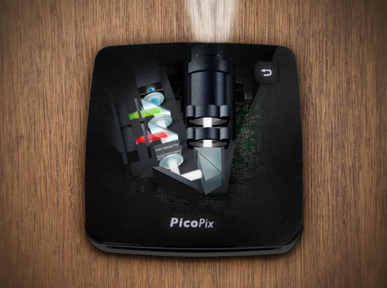
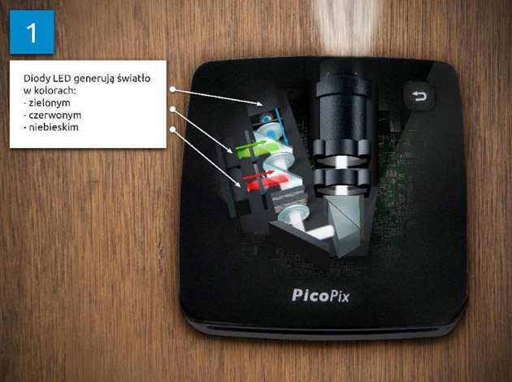
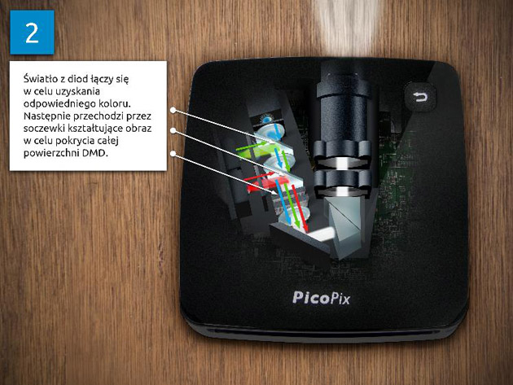
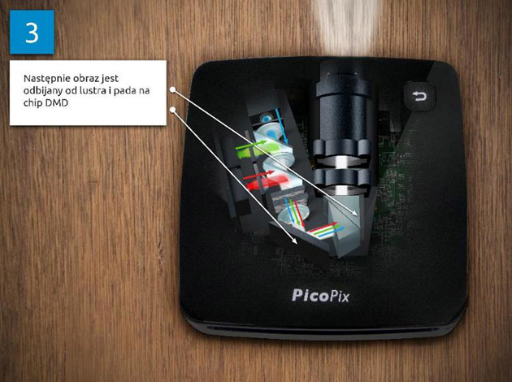
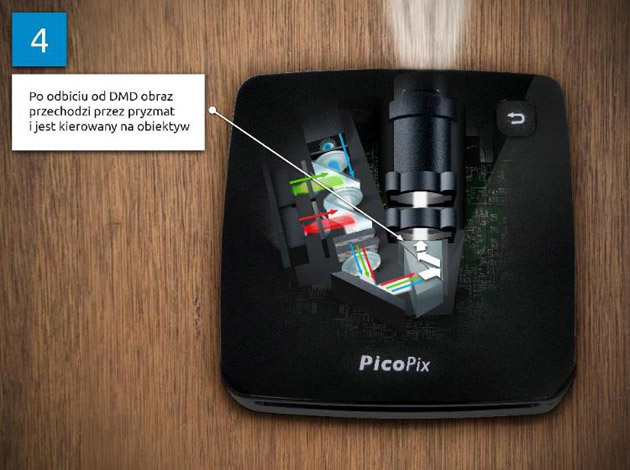

Poniżej wyjaśniona została zasada działania projektora i jego budowa na przykładzie kieszonkowego DLP ze źródłem światła w postaci diod LED. Jako przykład posłużył projektor Philips PicoPix, model PPX 2480.
Projektor ten, przed rozbiorem na części pierwsze, mierzy 10,5×10,5 cm, przy grubości 31 mm. Jego waga wynosi 290 g. Lampa posiada maksymalną moc 80 lumenów, a rozdzielczość wyświetlanego obrazu to 854×480 pikseli.
Po otwarciu obudowy, odkręceniu płyty głównej i demontażu lampy, wewnątrz widzimy wentylator, baterię oraz głośnik.
Na płycie głównej znajdują się złącza odpowiedzialne za komunikację z poszczególnymi elementami projektora – diodami LED, chipem DMD, złączami wejść i wyjść. Na spodniej części płyty głównej znajduje się wlutowana kość pamięci o pojemności 2GB.
Układ generujący obraz jest niewielki. W połączeniu z radiatorem chłodzącym diody LED i soczewkami zajmuje około 9 x 5 cm.

Lampa LED w technologii DLP
W przeciwieństwie do projektorów lampowych, posiadających jedno źródło światła, które przechodzi przez filtr nadający mu kolor, projektory LED posiadają 3 źródła światła. Każda z diod generuje światło w określonym kolorze: czerwonym, niebieskim i zielonym.

Światło jest generowane przez diody LED
Światło z diody zostaje skupione przez soczewkę i pada na półprzepuszczalne lustro. Następnie poszczególne promienie łączy się ze sobą w celu uzyskania odpowiedniej barwy.

Światło jest łączone w celu uzyskania barwy
Po odbiciu od lustra, światło trafia na chip DMD będący elementem technologii DLP. Chip DMD (Digital Micromirror Device) składa się z matrycy mikro-luster. Każde z mikro-luster odpowiada za jeden piksel wyświetlanego obrazu. Łatwo policzyć, że w tym wypadku na powierzchni około 1,5 cm2, zajmowanej, przez DMD znajduje się 409 tysięcy mikro-luster. Dodatkowo, każde z nich potrafi błyskawicznie zmienić swoje położenie w celu zmiany obrazu generowanego przez piksel, za który odpowiada. Poprzez „błyskawicznie” rozumiemy 1/60 część sekundy, w przypadku obrazu wyświetlanego z częstotliwością 60Hz.
DMD generuje obraz w skali szarości, któremu kolor nadawany jest za pomocą światła padającego z diod LED.

Światło pada na chip DMD
Mimo, że jest to mechanizm o trudnym do wyobrażenia poziomie skomplikowania, to prace służące wprowadzeniu rozdzielczości FullHD do projektorów kieszonkowych są już bliskie ukończenia. Rozdzielczość 1920 x 1080 pikseli oznacza 5-krotnie większe zagęszczenie mikro-luster na powierzchni DMD, niż w przypadku prezentowanego Philipsa PicoPix 2480.
Zaletami technologii DLP są wysoki poziom kontrastu oraz szybkość reakcji mikro-luster – dzięki temu obraz jest ostry i płynny.
Po odbiciu od DMD kolorowy obraz jest odbijany w pryzmacie i trafia na obiektyw, czyli prosty układ soczewek służący do przeniesienia treści na ekran. W przypadku PicoPix 2480 za pomocą obiektywu reguluje się również ostrość obrazu.

Kolorowy obraz wyświetlany za pomocą obiektywu
Mimo zaawansowania przedstawionej technologii widać, że przed producentami wciąż jest jeszcze sporo wyzwań. Głównymi problemami, przed którymi stoją konstruktorzy są:
- Ilość światła generowana przez pojedynczą diodę; obecnie maksymalna jasność spotykana w projektorach kieszonkowych nie przekracza 100 lumenów;
- Rozdzielczość obrazu, czyli stopień upakowania mikro-luster na niewielkiej powierzchni chipu DMD.
Na koniec zapraszam do obejrzenia wideo w języku angielskim przybliżające działanie i budowę projektorów LCD i DLP na przykładzie animacji poszczególnych ich komponentów podczas działania.
Źródło: http://www.benchmark.pl/testy_i_recenzje/projektory-laserowe/strona/19831.html